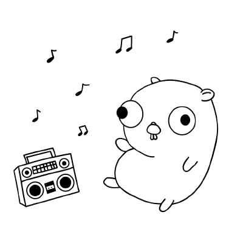

<div id="playback">
  <div class="progress mobile-progress" *ngIf="item">
    <div class="progress-bar" role="progressbar" aria-valuenow="20" aria-valuemin="0" aria-valuemax="100"
         [ngStyle]="{'width': utils.getPercentString(progressms, playback.playback.item.duration_ms)}"></div>
  </div>


  <div class="corner-left">
    
    
    <p class="playback-text" *ngIf="item">
      <span class="title-text">{{playback.playback.item.name}}</span><br>
      <span class="artist-text">{{playback.playback.item.artists[0].name}}</span>
    </p>

    <p class="playback-text" *ngIf="!item">
      <span class="title-text">No playback found</span><br>
    </p>
  </div>

  <div class="progress-div center" *ngIf="item">
    <div class="row">
      <div class="col text-center">

        <button class="btn btn-circle mx-4 material-btn" (click)="pausePlayback()"
                *ngIf="this.jamStore.currentMember?.rights.includes(JamRightHost) && playback.playback.is_playing">
          <span class="material-icons">pause</span>
        </button>
        <button class="btn btn-circle mx-4 material-btn" (click)="resumePlayback()"
                *ngIf="this.jamStore.currentMember?.rights.includes(JamRightHost) && !playback.playback.is_playing">
          <span class="material-icons">play_arrow</span>
        </button>

      </div>
    </div>
    <div class="row">
      <div class="col-1 progress-cell" style="text-align: right">
        <span class="progress-text">{{utils.millisecondsToTimeString(progressms)}}</span>
      </div>

      <div class="col-10 progress-cell">
        <div class="progress">
          <div class="progress-bar" role="progressbar" aria-valuenow="20" aria-valuemin="0" aria-valuemax="100"
               [ngStyle]="{'width': utils.getPercentString(progressms, playback.playback.item.duration_ms)}"></div>
        </div>
      </div>

      <div class="col-1 progress-cell" style="text-align: left">
        <span class="progress-text">{{utils.millisecondsToTimeString(playback.playback.item.duration_ms)}}</span>
      </div>

    </div>
  </div>

  <div class="corner-right">
    <div class="row" style="padding-top: 25px">
      <div class="col text-right">


        <button class="btn btn-circle mx-1 mobile-button material-btn" (click)="pausePlayback()"
                *ngIf="item && this.jamStore.currentMember?.rights.includes(JamRightHost) && playback.playback.is_playing">
          <span class="material-icons">pause</span>
        </button>
        <button class="btn btn-circle mx-1 mobile-button material-btn" (click)="resumePlayback()"
                *ngIf="item && this.jamStore.currentMember?.rights.includes(JamRightHost) && !playback.playback.is_playing">
          <span class="material-icons">play_arrow</span>
        </button>

        <ng-template #tipContent id="tipContent">
          <div style="white-space: nowrap">
            <span class="material-icons material-btn" style="font-size: 1rem; top: -2px;"
                  *ngIf="playback?.playback.device.name">
              speaker
            </span>
            {{playback?.playback.device.name ? playback?.playback.device.name : "Select a playback device"}}
          </div>
        </ng-template>
        <div ngbDropdown placement="top" class="d-inline-block" *ngIf="this.jamStore.currentMember?.rights.includes(JamRightHost)">
          <button class="btn btn-circle mx-1 material-btn" id="dropdownDevice" ngbDropdownToggle
                  #deviceTooltip="ngbTooltip" *ngIf="this.jamStore.currentMember?.rights.includes(JamRightHost)" [ngbTooltip]="tipContent"
                  (click)="getDevices()">
            <span class="material-icons">speaker_group</span>
          </button>
          <div ngbDropdownMenu aria-labelledby="dropdownDevice" *ngIf="devices">
            <button ngbDropdownItem [ngClass]="device.id === playback?.device_id ? 'active' : ''"
                    *ngFor="let device of devices.devices" (click)="selectDevice(device.id)">
              <span class="material-icons material-btn mr-1" style="font-size: 1rem; top: -2px;">speaker</span>
              {{device.name}}
            </button>
            <button ngbDropdownItem *ngIf="devices.devices.length === 0">No devices found</button>
          </div>
        </div>

        <button class="btn btn-circle mx-1 material-btn" (click)="openSettings()"
                *ngIf="this.jamStore.currentMember?.rights.includes(JamRightHost)" title="Settings">
          <span class="material-icons">settings</span>
        </button>
        <button class="btn btn-circle mx-1 material-btn" (click)="leave()" title="Leave JamSession">
          <span class="material-icons">exit_to_app</span>
        </button>

      </div>
    </div>

  </div>


</div>
